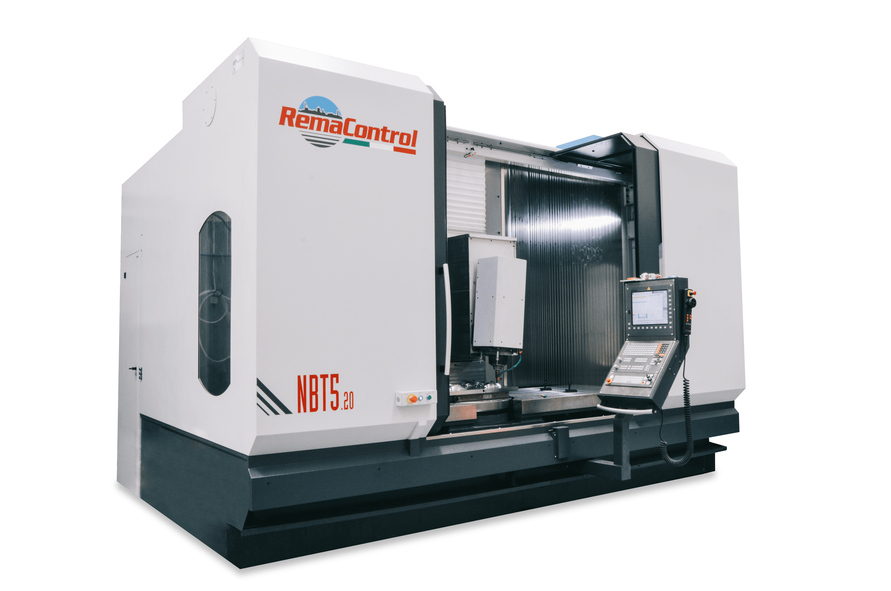
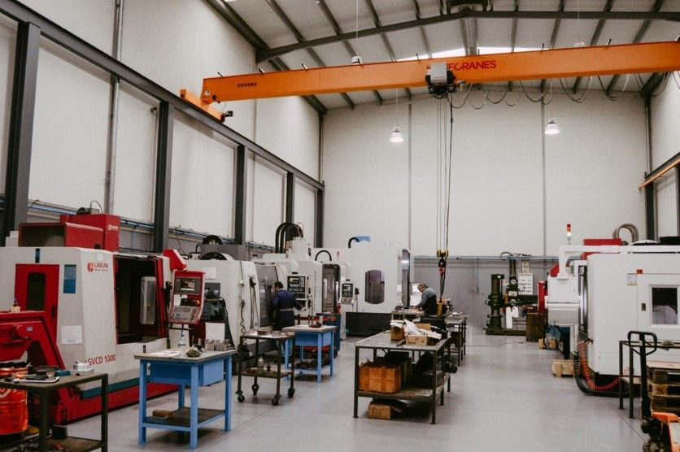
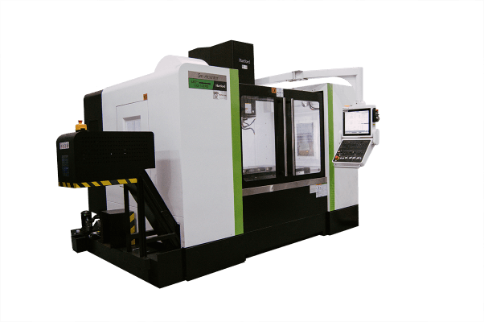

Centro de maquinação de 5 eixos
5 eixos contínuos, curso 2000×800×800, com prato rotativo de Ø700 mm.
Iniciámos o nosso percurso dedicando-nos à conceção de moldes para injeção e fundição, fazendo também vários tipos de trabalhos a nível de manutenção.
Neste departamento desenvolvem-se as atividades de fabricação de moldes metálicos, reparação e manutenção de produtos metálicos (exceto máquinas e equipamentos) e outras atividades de mecânica em geral.
Pedir orçamento
Neste departamento contamos com 7 centros de maquinação CNC, sendo um deles de 5 eixos contínuos 2000×800×800 com prato rotativo de Ø700 mm.

5 eixos contínuos, curso 2000×800×800, com prato rotativo de Ø700 mm.

Parque de 7 centros de maquinação dedicados à fabricação de moldes metálicos.
Instalações equipadas com ponte rolante e bancadas de trabalho de apoio à produção.
Para além disso, temos também no nosso parque de máquinas os seguintes equipamentos: